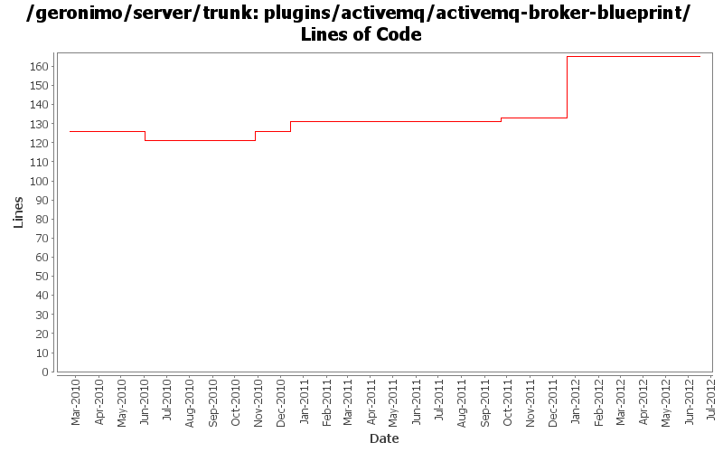

[root]/plugins/activemq/activemq-broker-blueprint
 src
(0 files, 0 lines)
src
(0 files, 0 lines)
 main
(0 files, 0 lines)
main
(0 files, 0 lines)
 history
(1 files, 74 lines)
history
(1 files, 74 lines)
 plan
(1 files, 45 lines)
plan
(1 files, 45 lines)
 resources
(1 files, 298 lines)
resources
(1 files, 298 lines)
 OSGI-INF
(0 files, 0 lines)
OSGI-INF
(0 files, 0 lines)
 blueprint
(1 files, 302 lines)
blueprint
(1 files, 302 lines)
 etc
(0 files, 0 lines)
etc
(0 files, 0 lines)

| Author | Changes | Lines of Code | Lines per Change |
|---|---|---|---|
| Totals | 15 (100.0%) | 96 (100.0%) | 6.4 |
| djencks | 7 (46.7%) | 75 (78.1%) | 10.7 |
| rickmcguire | 5 (33.3%) | 14 (14.6%) | 2.8 |
| rwonly | 1 (6.7%) | 5 (5.2%) | 5.0 |
| xiaming | 2 (13.3%) | 2 (2.1%) | 1.0 |
Update trunk version to 4.0.0-SNAPSHOT
1 lines of code changed in 1 file:
GERONIMO-6281 Use o.a.g.server.dir as the prefix to activemq.data path in order to generate the activemq datastore in the instance folder, for 3.0 trunk
1 lines of code changed in 1 file:
GERONIMO-6240 Modify configs so that they use features as the bootstrap, and fix a few compile and test errors. Servers build but do not fully start
38 lines of code changed in 1 file:
GERONIMO-6240 Make several base geronimo functions (kernel, deployer, etc) DS services and make the car-maven-plugin take advantage of that. Server assembly doesn't work yet, builds framework.
25 lines of code changed in 1 file:
GERONIMO-6240 various dependency changes such as removing sxc and reducing dependency on blueprint bundles
5 lines of code changed in 1 file:
GERONIMO-5987 The ActiveMQ working directory and port are not referenced correctly - multiple instances not possible
5 lines of code changed in 1 file:
[maven-release-plugin] prepare release 3.0-M2
1 lines of code changed in 1 file:
[maven-release-plugin] prepare branch 3.0-M2
1 lines of code changed in 1 file:
Fix up all-subprojects profile build
5 lines of code changed in 1 file:
make sure bundle versions of activemq dependencies are used
5 lines of code changed in 1 file:
remove unneeded backport-util dependency
2 lines of code changed in 1 file:
GERONIMO-5290 fix many of the deprecation warnings from maven 3
5 lines of code changed in 1 file:
minor cleanups to try to reduce dependency creep
2 lines of code changed in 1 file:
GERONIMO-4931 Run activemq under (aries) blueprint using xbean-blueprint
0 lines of code changed in 2 files: